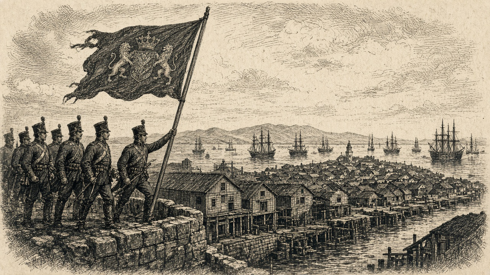
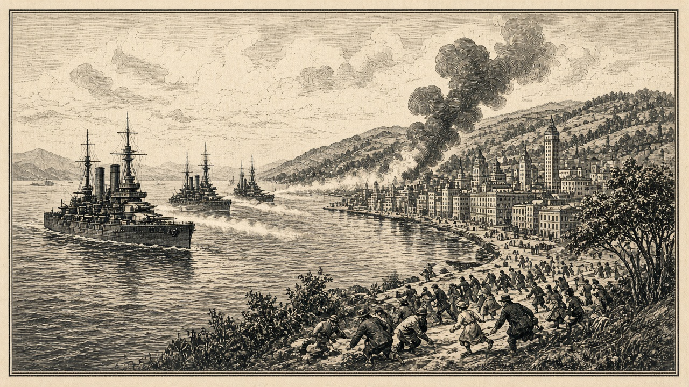
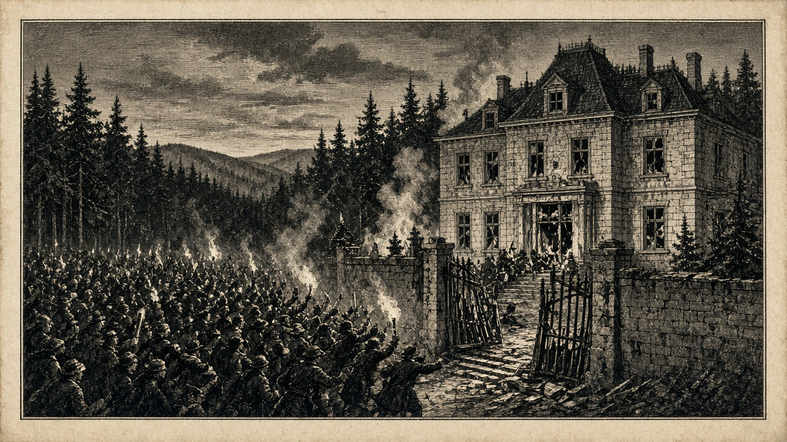

カペレナ、藍岬の兵站と大都市を占領 戦争は続く
予備兵1,900投降・食糧5万トン徴発 藍岬は停戦を打診 カペレナは攻撃側のまま

【総合部】第208期、カペレナ王国は藍岬共和国連邦の兵站基地（83,23）と大都市（82,24）を占領した。予備兵千九百人が投降し、食糧五万トンが徴発された。公報損害は藍岬九千人、カペレナ六百人。藍岬は停戦を打診したが、両国の交戦は続いている。詳報は2面。


カペレナの抗議で泰平の蒼森侵攻が回避 伯領では暴動9か所
カペレナ王国は観光者通信で泰平天国に最後通牒を送り、蒼森辺境伯領への進軍停止を求めた。公報は「泰平天国と蒼森辺境伯領の戦争は回避されました」と記す。同じ週、蒼森では食料不足のまま九か所で暴動が起き、防衛施設・兵站・工場が住民の殺到で壊滅。首都では辺境伯邸も襲撃された。詳報は5・6面。オリョルッルの艦砲が翠澄を叩き、翠湖は停戦を打診したが交戦は続く。スルガからなのですへ移民八万三千九百人。金野はなのですへ停戦を打診したが、戦闘は続いた。火災十七件・七万二千四百人。国特集は9面の胡椒帝国。